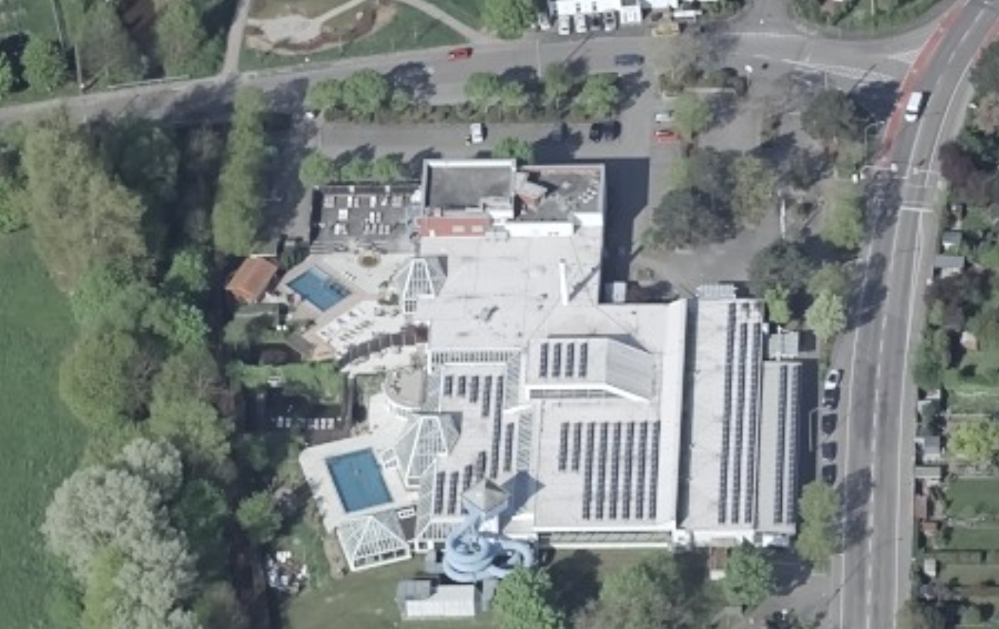
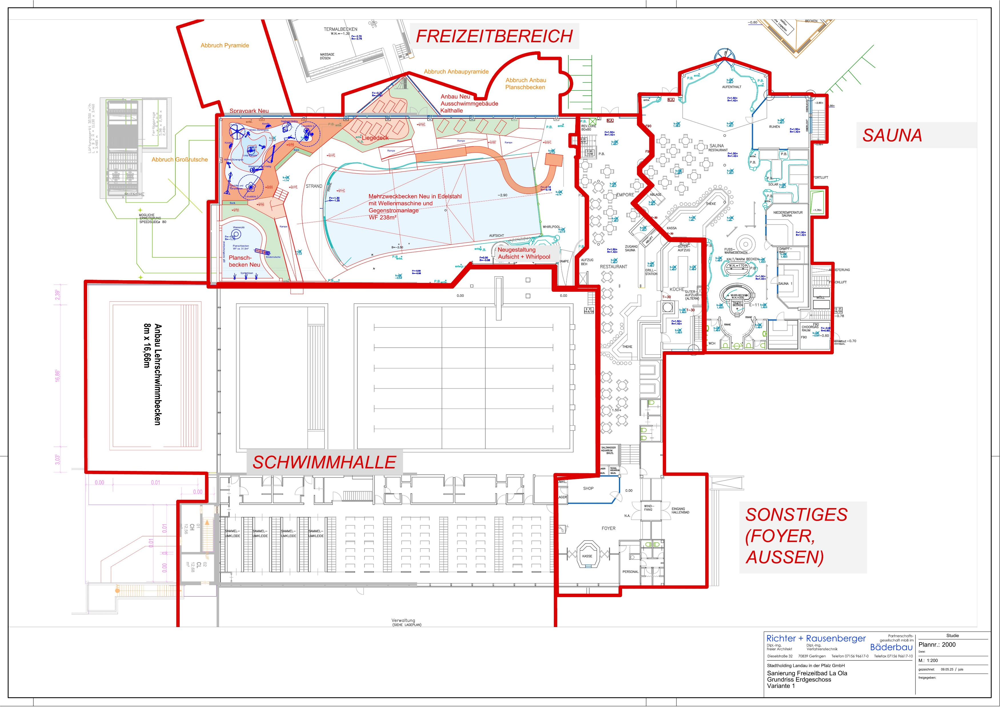

🏊 Modernisierung Freizeitbad LA OLA
Für unsere Stadt. Für unsere Bürger.
📊 Das LA OLA in Zahlen
240.000
Besucher pro Jahr
30.000
Schüler im Sportunterricht
30.000
Vereinsmitglieder
🎓 Bildungsauftrag
30.000 Schüler jährlich
- Schwimmunterricht für alle Schulen
- Sicherung der Schwimmfähigkeit
- Erfüllung des Bildungsauftrags
- Prävention von Badeunfällen
- Nutzung durch die Uni Landau im Rahmen der Sportlehrerausbildung
🏅 Ohne LA OLA:
Kein regulärer Schwimmunterricht für Landauer Schülerinnen und Schüler möglich
⚽ Vereinssport
30.000 Vereinsmitglieder
- Schwimmsport
- Kinderschwimmunterricht
- Rettungsschwimmerausbild
- Reha-Sport
- Wasserrettungsorganisation
🏆 Leistung:
Das LA OLA ist die Heimat für Breiten- und Leistungssport in der Region
🏘️ Gesellschaftliche Bedeutung
240.000 Besucher jährlich
Das Freizeitbad LA OLA ist eine der meistgenutzten öffentlichen Einrichtungen der Stadt Landau.
👨👩👧👦 Familien
Freizeitgestaltung und Erholung für alle Generationen
💪 Gesundheit
Förderung von Bewegung und Prävention
🏙️ Lebensqualität
Attraktivität Landaus als Wohnort
💼 Wirtschaft
Positive Effekte auf lokale Unternehmen
📋 Planung

📑 Bestandsituation LA OLA
- Bestandsituation Laola Schwimmerbereich mit Schwimmerbecken und Nichtschwimmerbecken (Baujahr ca. 1973) Teile der Schwimmhalle wurden schon saniert, sind nun aber wieder sanierungsbedürftig: Edelstahlbecken (rostig zur Seite Technik, Rinne schadhaft) Beckenumgänge Fliesen Abluftkanäle Lüftung im Beckenumgang tlw. durchgerostet Übergänge zu Freizeitbereich nicht barrierefrei Flachdach über Schwimmhalle dringend sanierungsbedürftig Freizeitbereich mit Wellenbecken, 2 Kinderplanschbecken, Riesenrutsche (Baujahr ca. 1992) Fast alle Bereiche in der Schwimmhalle sind noch im Originalzustand und müssen vorallem das Wellenbecken dringend saniert werden: Rückbau der Riesenrutsche (energetische Sanierung zu aufwändig, Bausubstanz schwierig Glaspyramide Rückbau – Thermisch schwierig, wird kaum genutzt Die Beiden Planschbecken sind an verschiedenen Bereich der Freizeithalle angedockt – ungünstig für die Aufsicht, wenig attraktiv – beide Bereich nur für ganz kleine Kinder, nicht barrierfrei erreichbar Dach an den Übergängen zu den Glasdächern an vielen Stellen undicht, Dachaufbau abgängig Technik Aufgrund von Platzproblemen im Untergeschoss und man bei einer Sanierung der Badewassertechnik vor über 15 Jahren keinen Anbau machen wollte wurde eine Ultrafiltration im bestehende UG eingebaut. Verschiedene Standorte der Technik Ultrafiltration schwierig – Ultrafiltration müsste saniert werden, aber sehr aufwendig in Bedienung und Wartung (durch heutige Personalsituation noch schwieriger)
📑 Sanierungsmaßnahmen, Planung

📑 Sanierungsmaßnahmen, Planung
- Teil 1: Schwimmhalle – Sanierung und Anbauten Sanierung Schwimmhalle. Umstellung der Badewassertechnik von Ultrafiltration auf Standardverfahren Mehrschichtfiltration (über Sand und Kohle) wegen einfacher Bedienung und Wartung. Dazu neue Technikräumlichkeiten erforderlich Anbau neben Schwimmhalle notwendig dafür. Beheizung mit Fernwärme (Umstellung von Gas auf Fernwärme) PV- und PVT- Anlage zur Stromversorgung und teilweiser Wärmeversorgung auf den Dächern Anbau zusätzliches Lehrschwimmbecken für Schulen, Vereine.
- Teil 2: Freizeitbereich Abbruch Glas-Pyramide (undicht, energetische schwierig, Temperaturen kaum regelbar, wenig genutzt) Abbruch Großrutsche Sanierung zu aufwendig, energetisch schwierig Sanierung / Umbau des Wellenbeckens zum Kombibecken mit Gegenstromanlage und Kinderrutsche (Kompensation zur Großrutsche), dadurch ist das Kombibecken auch für Schwimmer in den Zwischenzeiten nutzbar Neubau Kinderplanschbecken mit kindgerechten Spieleinrichtungen Neubau Wasserspiellandschaft Spraypark für mittlere Kinder als Ersatz für die Großrutsche Neue Gestaltung Beckenumgangslandschaft mit Rampen zur Erweiterung der Barrierefreiheit
- Teil 3: Sanierung Sauna
❗ Warum oberste Priorität?
- Daseinsvorsorge: 240.000 Bürgerinnen und Bürger nutzen die Einrichtung jährlich
- Bildung: Unverzichtbar für 30.000 Schülerinnen und Schüler
- Sport: Trainingsgrundlage für 30.000 Vereinsmitglieder
- Gesundheit: Zentrale Rolle für Prävention und Rehabilitation
- Wirtschaft: Standortfaktor und Arbeitgeber
- Integration: Begegnungsstätte für alle gesellschaftlichen Gruppen
Für unsere Stadt.
Für unsere Bürger.
Das LA OLA ist mehr als ein Schwimmbad
es ist ein Ort für Bildung, Sport und Gemeinschaft.
OBERSTE PRIORITÄT FÜR LANDAU
Vielen Dank für Ihre Aufmerksamkeit!